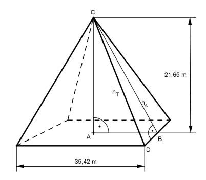

Aufgabe 228 Die quadratische Pyramide vor dem Louvre in Paris ist 21,65 m hoch und hat eine Grundseite von 35,42 m. Wie lang ist eine Stahlstrebe, die die Seitenflächen miteinander verbindet? Wie schwer ist die Glasabdeckung, sie besteht aus 603 Rauten mit Diagonalen von 3 m und 1,9 m und 70 halb so großen Dreiecken, wenn 1 m³ des 21 mm dicken Glases 2,5 t wiegt?  Höhe hs einer Seitenfläche: Satz von Pythagoras im Dreieck ABC: AB = 35,42 m/2 = 17,71 m hs² = AB² + AC² hs² = 17,71² m² + 21,65² m² = 782,4 m² |√ hs = 28 m Länge hT der Stahlstrebe: Satz von Pythagoras im Dreieck DBC: DB = 35,42 m/2 = 17,71 m hT² = DB² + BC² hT² = 17,71² m² + 28² m² = 1 097,6 m² |√ hT = 33,1 m Fläche der 603 Rauten: 3 m * 1,9 m 603 * -------------- = 1 718,6 m² 2 Fläche der 70 Dreiecke: 1,5 m * 1,9 m 70 * ---------------- = 99,8 m² 2 21 mm = 0,021 m V = (1 718,6 m² + 99,8 m²) * 0,021 m = 38,2 m³ m = 38,2 m³ * 3,5 t/m³ = 95,5 t